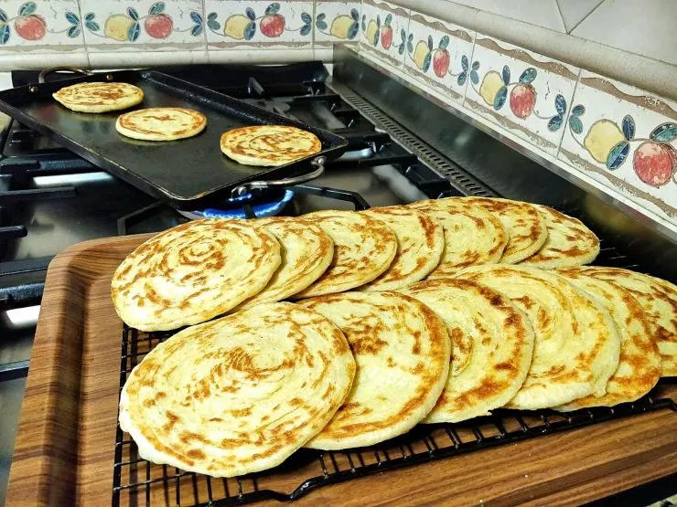

Moroccan Melaoui

The finished product of this recipe : a delicious moroccan melaoui
Round laminated Moroccan pancakes or crepes are easier to make than you think! The modern method of rolling and shaping the dough below requires less working space and less resting time than other methods.
List of ingredients :
For Making the dough
- 385 g of fine semolina or durum flour
- 185 g of white flour - (bread flour or high gluten preferred)
- 60 g whole wheat flour - (can substitute with white flour)
- 2 teaspoons sugar
- 2 teaspoons salt
- 0.25 teaspoon dry yeast
- 375 ml warm watter - (approx.)
For Shaping the melaoui
- 220 ml vegetable oil - (approx.)
- 115 g unsalted butter, -softened (approx.)
- 85 g fine semolina
Steps:
Make the melaoui dough
- Combine the flours and salt, then stir in the yeast. Add the water and mix to form a soft dough that's easy to knead; soft and pliable but not sticky. If necessary, work in a little more water or flour to achieve that texture
- Knead the dough by hand for 10 minutes (or with a stand mixer and hook attachment for 5 minutes), or until smooth and supple.
- Oil a large tray. Divide the dough into approximately 16 smooth balls (the size of small plums) and place them on the oiled tray, leaving ample space between balls. Oil the top of the dough balls, cover loosely with a piece of plastic wrap and leave to rest for 20 to 30 minutes.
Shape the melaoui
- Set up your work area with the tray of dough and bowls of oil, soft butter and semolina. You'll need at least a 12" (30 cm) square flat area to work with the dough; this can be a clean counter top, a large plastic or metal tray, a large platter, etc. (In Morocco we often use a very large shallow bowl called a gsaa for this purpose.)
- Generously oil your work surface. Take a ball of dough and set it in the center of the work area. Oil your hands and the top of the dough, then flatten and stretch the dough into a paper-thin square using light pressure and a sweeping motion with your fingers. Use more oil as needed, and try not to tear the dough as you work.
- Dab or spread some of the softened butter across the square of dough, then sprinkle the surface with semolina.
- Roll the dough just as you would for cinnamon rolls. Take the top edge of the dough and roll it snugly downward toward you. Set this narrow roll of dough aside.
- In the same manner as you did with the first ball of dough, flatten and spread another ball of dough into a paper-thin square the same size as the first. Dot it with butter and sprinkle it with semolina.
- Roll the first roll within the second square of dough. Do this by placing the rolled up dough at the top edge of the new square and rolling downward, wrapping the new square of dough snugly around the first. Set this new thicker roll aside.
- Repeat this process until you've used half of your balls of dough -- flattening a ball of dough into a square, dotting it with butter, sprinkling with semolina, then rolling it around the existing roll of dough. Wrap each new dough layer as snugly as possible as you work. In the end you will have a thick laminated roll of dough.
- With a sharp knife, cut the roll into 8 even slices. This is easiest done by cutting the long roll in half in the middle; then slicing each half in the middle; and finally cutting those pieces in half again to get a total of 8 rolls. Place each slice or roll cut-side up on the tray and cover loosely with plastic.
- Repeat the entire process with remaining balls of dough to make another large laminated roll. Divide it into 8 rolls and place them coil-side up on the tray. Cover loosely with plastic and leave to rest for 15 to 20 minutes.
Cook the melaoui
- Heat a double griddle or two large frying pans over medium heat.
- Starting with the dough that was shaped first, flatten two rolls of dough by firmly patting them into 1/8" (3 mm) thick rounds; place them on the preheated pan(s) and cook for several minutes, turning several times, until nicely golden and crispy on the outside. Transfer to a rack to cool.
- Continue flattening and cooking in batches -- as many per batch as your pan(s) can accommodate -- until all the meloui are cooked. Avoid too high of a heat as meloui need adequate time to cook all the way through the center.
Serving and storing the melaoui
- Serve meloui warm with butter, honey, jam or soft cheese on the side. Or, try the traditional method of dipping meloui in hot syrup made from melted butter and honey -- it's delicious!
- Completely cooled meloui can be stored for up to two months in the freezer for later serving. Note that meloui don't keep well at room temperature for more than a day.
- Reheat meloui (thawed or frozen) in a pan on the stove or by placing directly on the rack in a preheated 350 F/180 C oven for a few minutes.
NOTES:
- Fine semolina gives a slightly coarser texture to meloui as compared to durum flour. Both are fine to use in the dough, but the semolina is preferred over durum for sprinkling over the dough when rolling and shaping.
- When rolling the squares of dough as you would for cinnamon rolls, try to keep the layers as snug as possible. If rolled too loosely, the coils will separate when you flatten the dough for cooking.
Source